Kia ora te whenua, te ngahere, te wai
May the land, forests, and waters flourish.
Wildlife photography / ongoing
Kia ora te whenua, te ngahere, te wai
May the land, forests, and waters flourish.
Ka tū au hei kaitiaki
I stand as a guardian of nature.
Hei tiaki mō te taiao
To care for and protect the natural environment.
Kia tiakina te mauri o te whenua
May the life force, spirit, and wellbeing of the land be protected.
Tīhei mauri ora!
Let there be life!
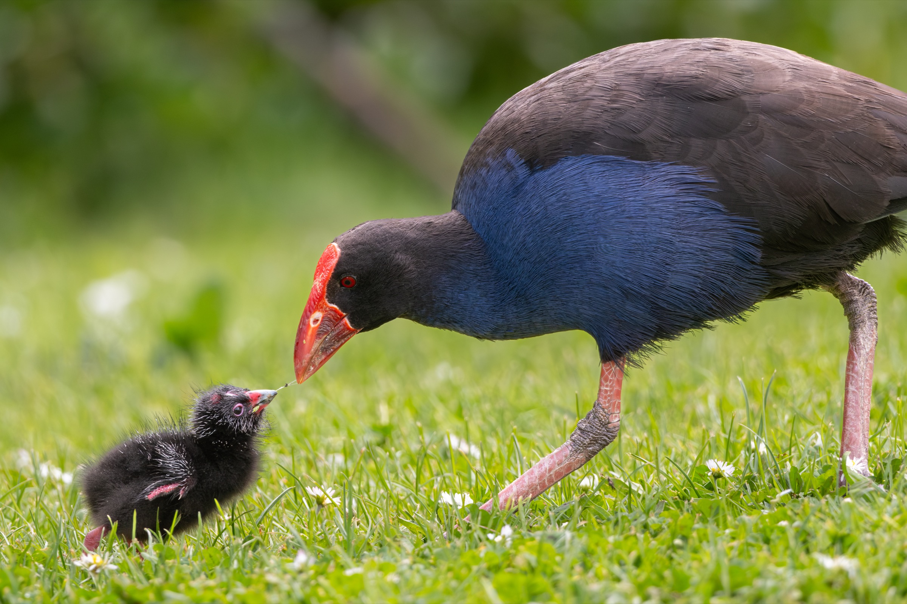
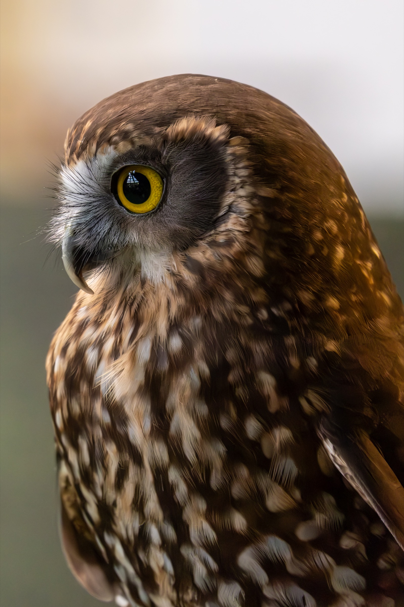
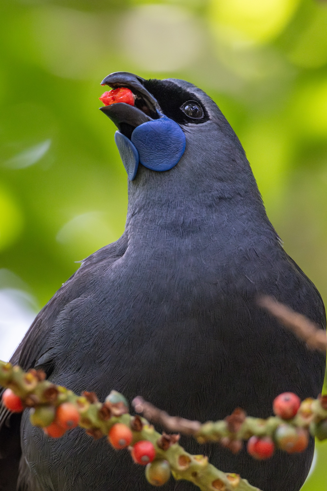
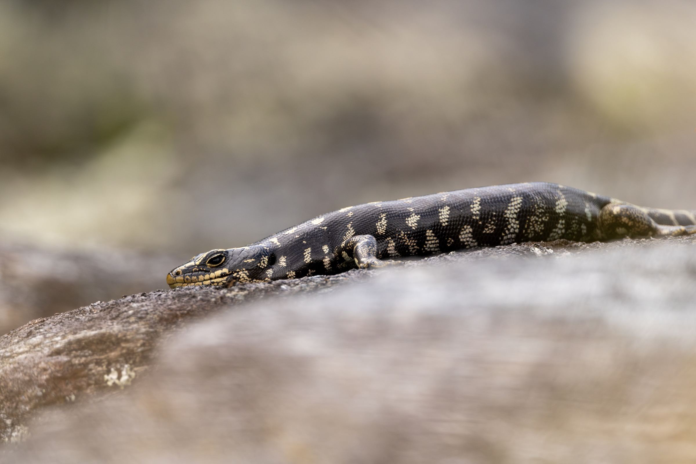
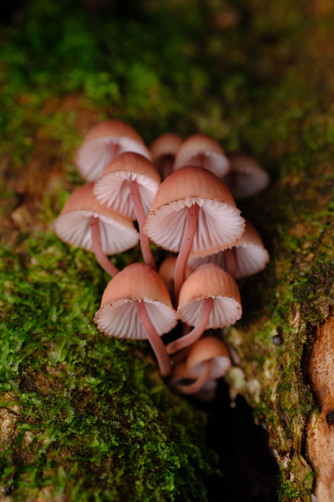
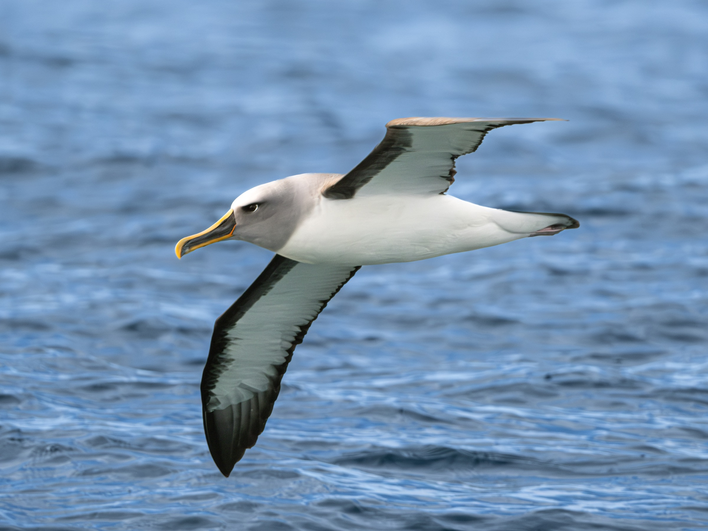
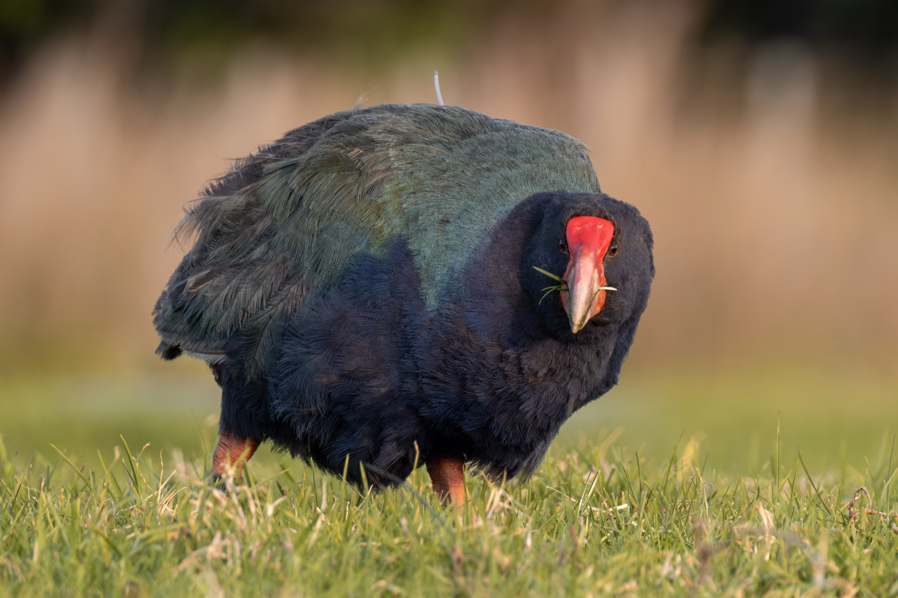
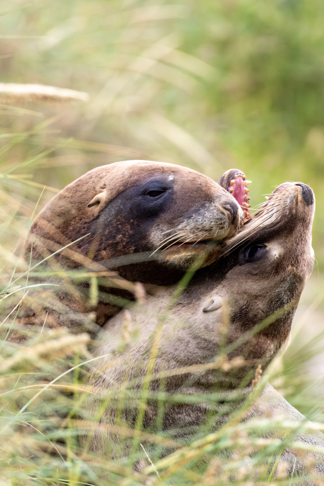
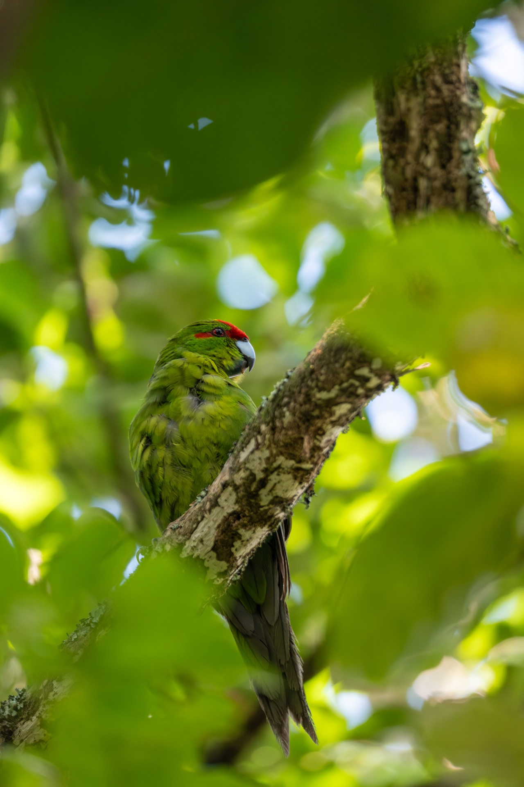
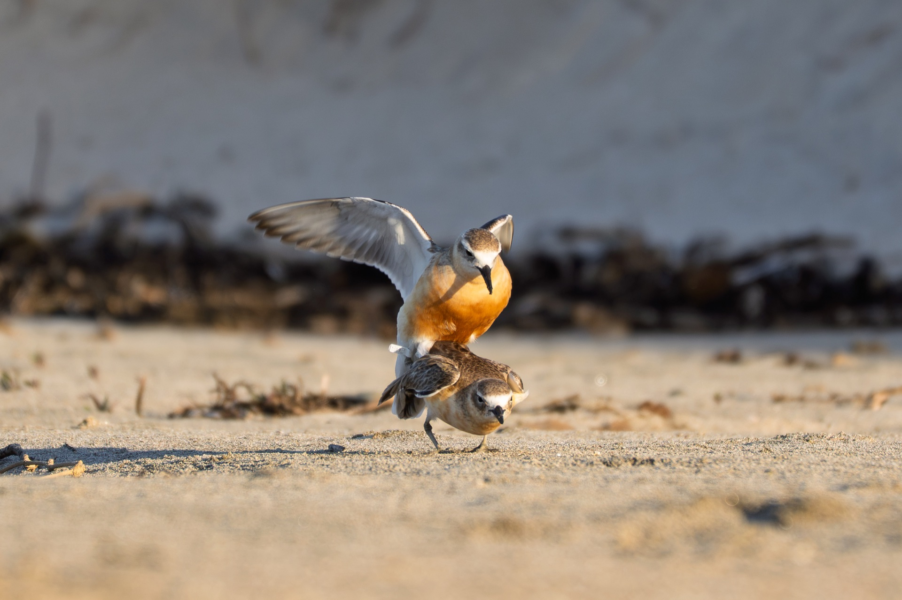
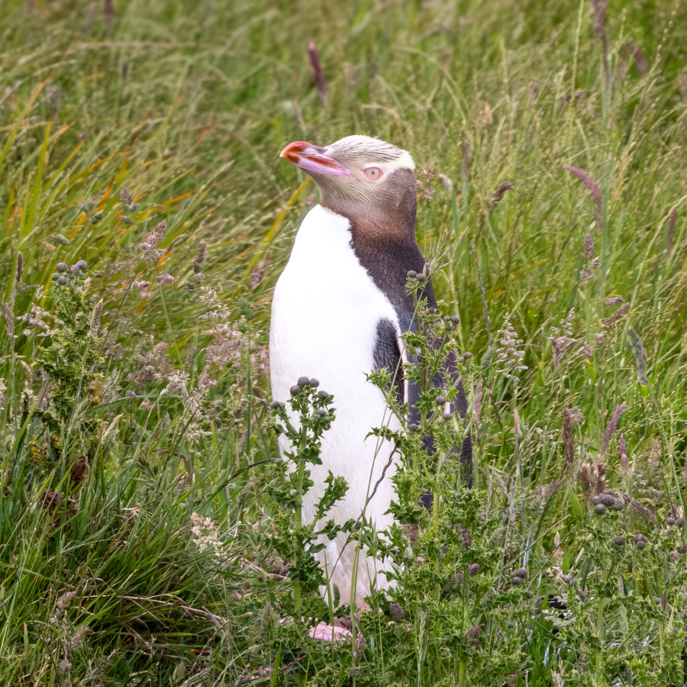
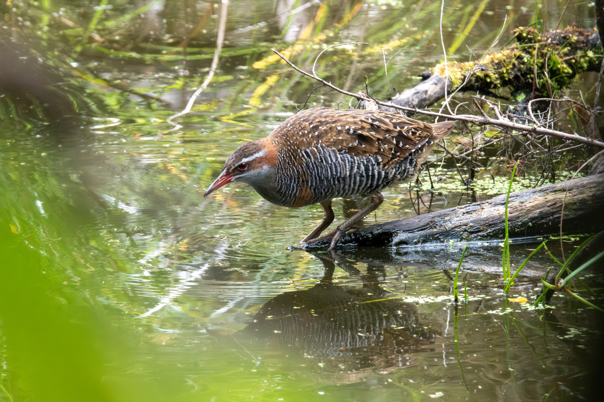
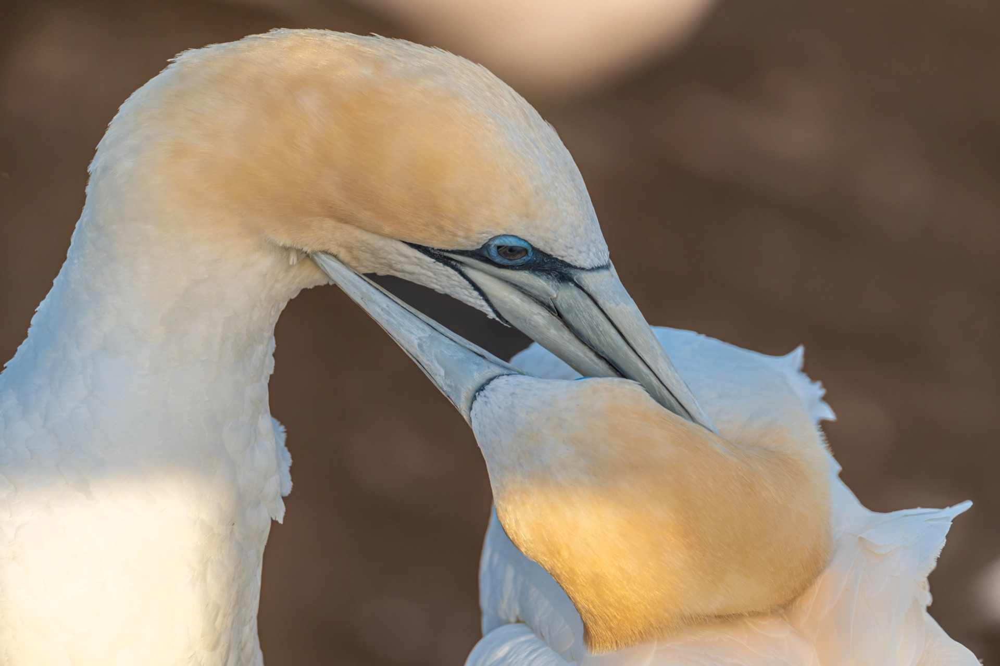
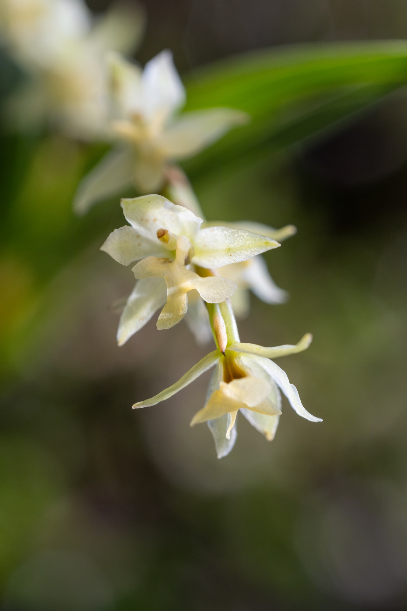